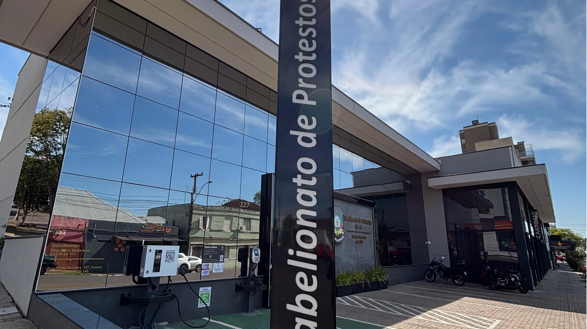
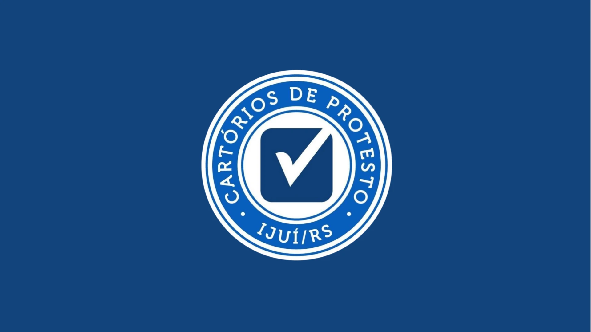
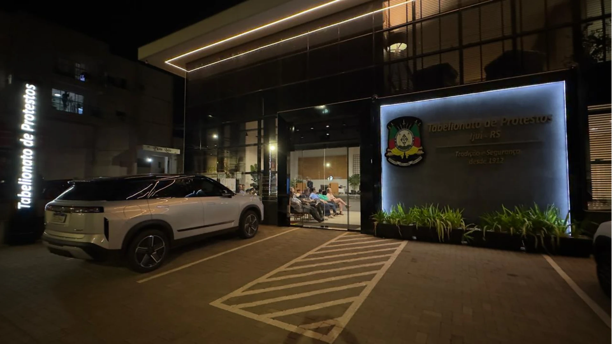

Tabelionato de Protestos de Ijuí — RS
Tradição e Segurança
desde 1912
Mais de um século a serviço da comunidade de Ijuí e região, com atendimento ágil, sigilo profissional e segurança jurídica em cada protesto e certidão emitida.
tradição
Sobre o Tabelionato
Uma história de confiança construída ao longo de gerações
Desde 1912, o Tabelionato de Protestos de Ijuí presta serviços notariais de protesto com responsabilidade, imparcialidade e rigor técnico, atuando conforme a legislação notarial e de registros do Rio Grande do Sul.
Nossa equipe une tradição e tecnologia para oferecer um atendimento moderno, transparente e seguro — da apresentação do título até a emissão de certidões, sustações e cancelamentos.
-
Segurança jurídicaProcedimentos conforme a Lei 9.492/97 e normas da Corregedoria‑Geral de Justiça.
-
Atendimento ágilProtocolos rápidos, prazos respeitados e acompanhamento próximo de cada processo.
-
Sigilo e transparênciaInformações tratadas com confidencialidade e clareza em cada etapa.
O que fazemos
Nossos Serviços
Soluções notariais completas para pessoas físicas, empresas, cartórios, bancos e credores.
Protesto de Títulos
Apresentação e protesto de duplicatas, cheques, notas promissórias, contratos e outros títulos de dívida.
Certidões
Emissão de certidões positivas e negativas de protesto para pessoas físicas e jurídicas.
Consulta de Protestos
Consulta de existência de protestos em nome de pessoas físicas e jurídicas.
Gerar Anuência Eletrônica
Solicitação e emissão de anuência eletrônica de protesto após a quitação do título.
Conheça o espaço
Galeria
Uma estrutura moderna, acessível e pensada para o seu conforto.




Onde estamos
Horário e Localização
CEP 98700‑145 · ver no Google Maps
Segurança
Canais Oficiais de Comunicação
Para a sua segurança, veja como identificar um contato verdadeiro do Tabelionato de Protestos de Ijuí e evite cair em golpes.
Como entramos em contato
Podemos ligar ou enviar mensagem pelo nosso WhatsApp oficial para avisar sobre um título apresentado a protesto em seu nome (apontamento), sempre nos identificando como “Tabelionato de Protestos de Ijuí” logo no início da conversa.
Nosso WhatsApp funciona pela plataforma oficial, verificada pela Meta. Por isso, pode ser necessário que você responda à nossa mensagem para que possamos continuar o atendimento — essa é uma regra do próprio WhatsApp, não uma cobrança da nossa parte.
Em nenhuma hipótese enviamos cobranças por número pessoal, nem pedimos pagamento por Pix para “liberar” documentos ou cancelar um protesto.
Orientações para não cair em golpes
- Confirme sempre pelo número oficial (55) 3332-7720 antes de qualquer pagamento ou envio de dados.
- Desconfie de mensagens vindas de outros números, mesmo que usem nosso nome, logo ou fotos.
- Não clique em links enviados por perfis não oficiais, nem baixe arquivos de contatos desconhecidos.
- Consultas, certidões e anuências são feitas apenas pelo portal oficial indicado neste site ou presencialmente em nosso balcão.
- Na dúvida, ligue para o número oficial ou compareça pessoalmente na Rua 19 de Outubro, 127 — Centro.
Termos de Uso do Tabelionato
Este site tem caráter informativo sobre os serviços do Tabelionato de Protestos de Ijuí/RS. Os serviços de protesto de títulos, certidões, consulta de protestos e anuência eletrônica são realizados exclusivamente pelos canais oficiais aqui indicados: nosso balcão físico, o telefone/WhatsApp (55) 3332-7720 e o portal pesquisaprotesto.com.br.
Este site não realiza cobranças, não processa pagamentos e não solicita dados sensíveis (como senhas ou dados bancários) diretamente por meio de suas páginas. O uso dos serviços de terceiros vinculados, como o portal de pesquisa de protestos, segue os termos e a política de privacidade do respectivo provedor.
Buscamos manter as informações deste site atualizadas e corretas, mas recomendamos sempre confirmar prazos, valores e procedimentos diretamente com o Tabelionato pelos canais oficiais antes de tomar qualquer decisão.
Em caso de dúvida sobre a autenticidade de um contato recebido em seu nome, procure diretamente nossos canais oficiais antes de fornecer qualquer informação ou realizar qualquer pagamento.